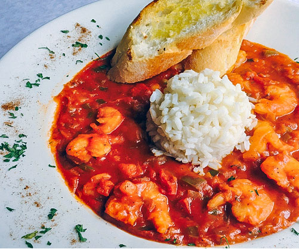

Shrimp Creole

Servings : 6 - 8
Prep time : 30 minutes
Cook time : 1 hour
Ingredients
- 2 pounds medium head-on shrimp
- 2 tablespoons vegetable oil
- 1 medium onion, finely chopped
- 1 celery stalk finely chopped
- 2 poblano chiles, stemmed, seeded, and finely chopped
- 1 yellow banana chile, stemmed, seeded, and finely chopped
- 1 jalepeno pepper, stemmed, seeded, and finely chopped
- 2 garlic cloves, thinly sliced
- 1 teaspoon dried thyme
- 1/2 teaspoon dried basil
- 1 1/2 teaspoon salt
- 1/4 teaspoon ground white pepper
- 1/4 teaspoon ground black pepper
- 1 (6-ounce) can tomato paste
- 4 ripe medium tomatoes, finely chopped and juice reserved (about 2 cups).
- 1 tablespoon red wine vinegar
- 2 cups shrimp stock
- 2 tablespoons chopped fresh oregano, or 2 teaspoons dried oregano
- Steamed rice
- 2 scallions (white and green parts), thinly sliced
- (Optional)Hot sauce
Instructions
- Peel and devein the shrimp
- Heat the oil in a large cast iron skillet over medium heat. Add the onion, celery, chiles, garlic, thyme, basil, salt, and white and black pepper, and stir for 5 minutes, or until the chiles
begin to soften
- Add the tomato paste and cook, stirring for 3 minutes more, until the vegetables are well coated.
- Add the tomatoes, their juices, and the vinegar. Reduce heat to low and simmer for 10 minutes, until the mixture is slightly thickened.
- Add the stock and simmer until the tomatoes break down and begin to form a sauce, 20 minutes more.
- Add the peeled shrimp and oregano, and simmer for another 20 minutes, stiring occasionaly. Taste for seasonings, then serve immediately over hot rice, garnished with scallions and hot sauce.